이 선은 무엇처럼 보이나요?
다른 설명이나 참고 그림을 보기 전에 첫인상을 기록하세요. 사물이 떠오르지 않으면 ‘없음’이 정상적인 답입니다. 네모나 다각형만 보이면 ‘없음 / 일반 도형’을 선택하세요. 다른 사람의 답변을 보지 말고 각자 평가해 주세요.
Q001
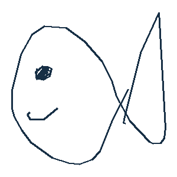
Q002
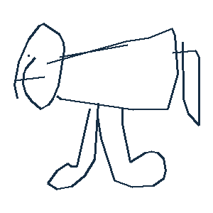
Q003
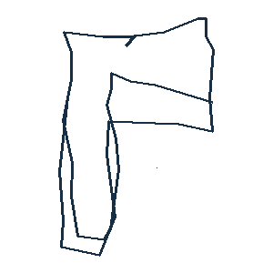
Q004
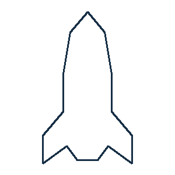
Q005
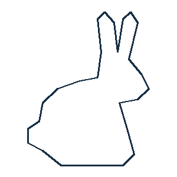
Q006
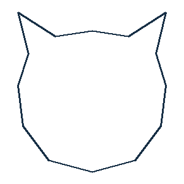
Q007
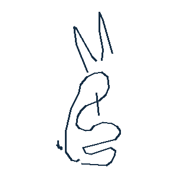
Q008
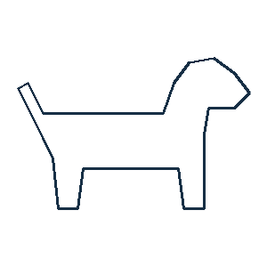
Q009
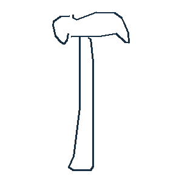
Q010
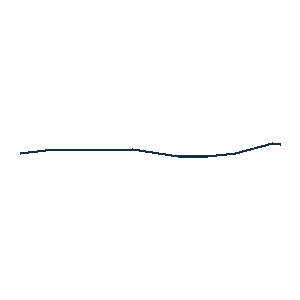
Q011
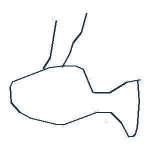
Q012
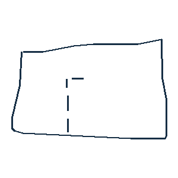
Q013
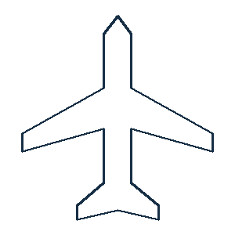
Q014
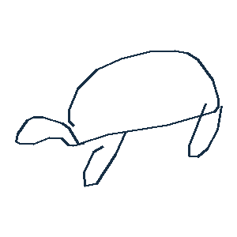
Q015
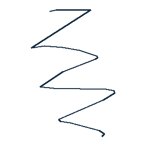
Q016
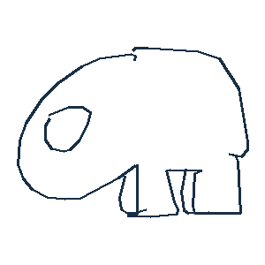
Q017
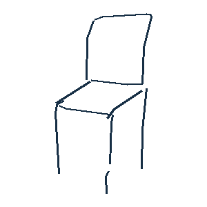
Q018
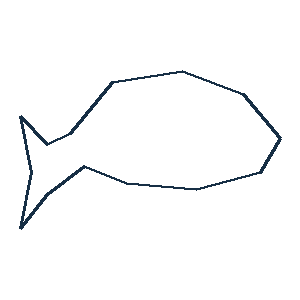
Q019
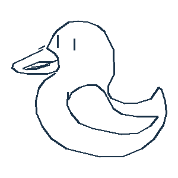
Q020
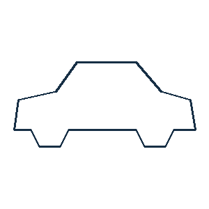
Q021
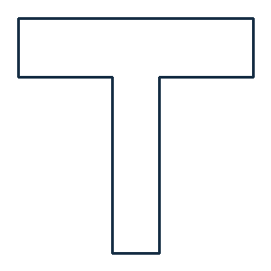
Q022
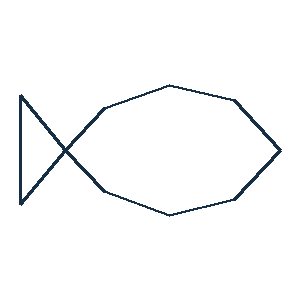
Q023
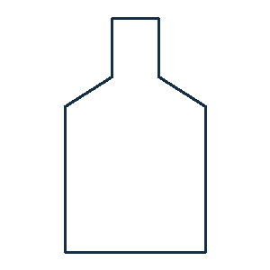
Q024
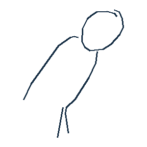
Q025
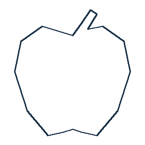
Q026
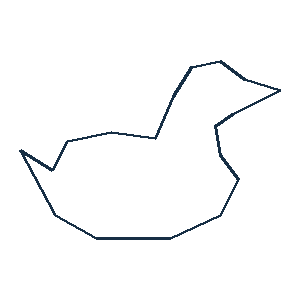
Q027
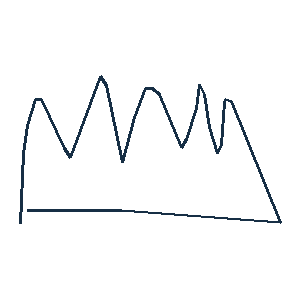
Q028
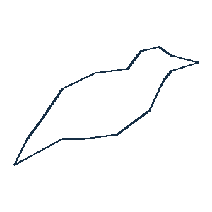
Q029
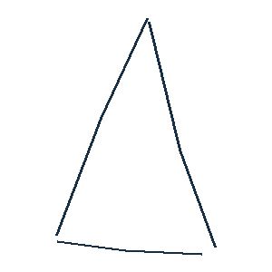
Q030
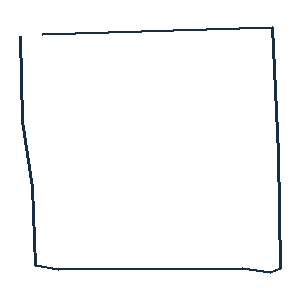
Q031
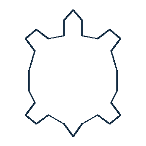
Q032
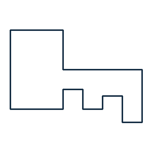
Q033
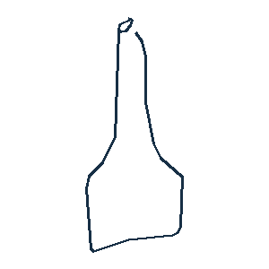
Q034
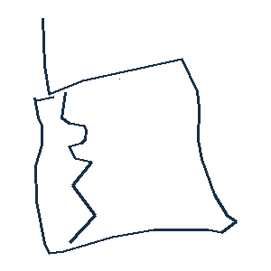
Q035
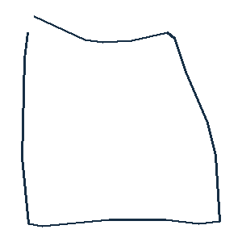
Q036
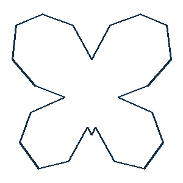
Q037
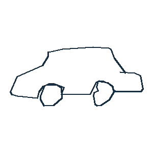
Q038
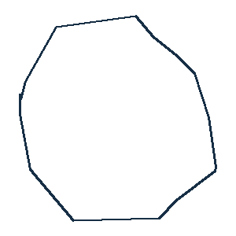
Q039
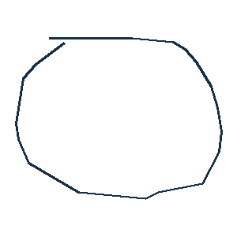
Q040
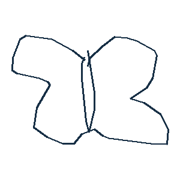
Q041
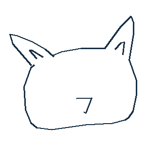
Q042
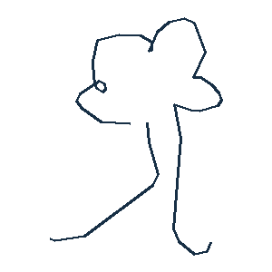
Q043
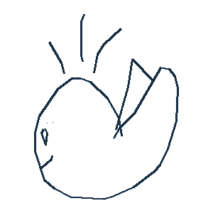
Q044
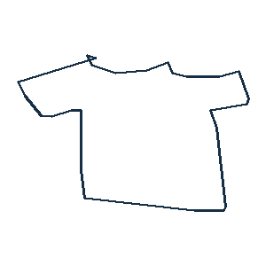
Q045
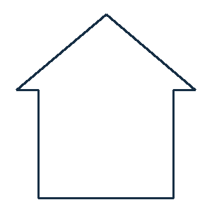
Q046
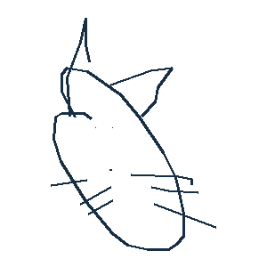
Q047
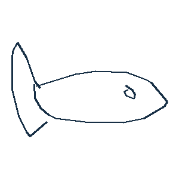
Q048
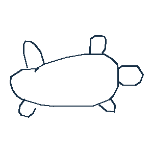
Q049
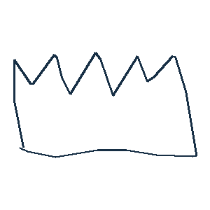
Q050
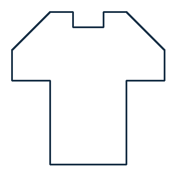
Q051
Q052
Q053
Q054
Q055
Q056
Q057
Q058
Q059
Q060
Q061
Q062
Q063
Q064
Q065
Q066
Q067
Q068
Q069
Q070
Q071
Q072
Q073
Q074
Q075
Q076
Q077
Q078
Q079
Q080
Q081
Q082
Q083
Q084
Q085
Q086
Q087
Q088
Q089
답변은 평가자 코드별로 브라우저에만 임시 저장됩니다. 다음 평가자에게 빈 화면을 보여 주세요.